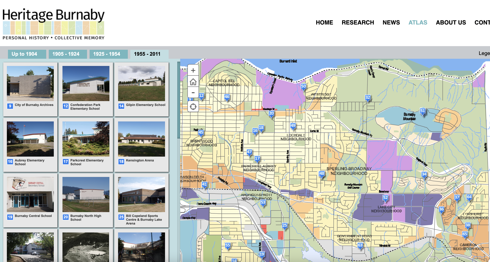
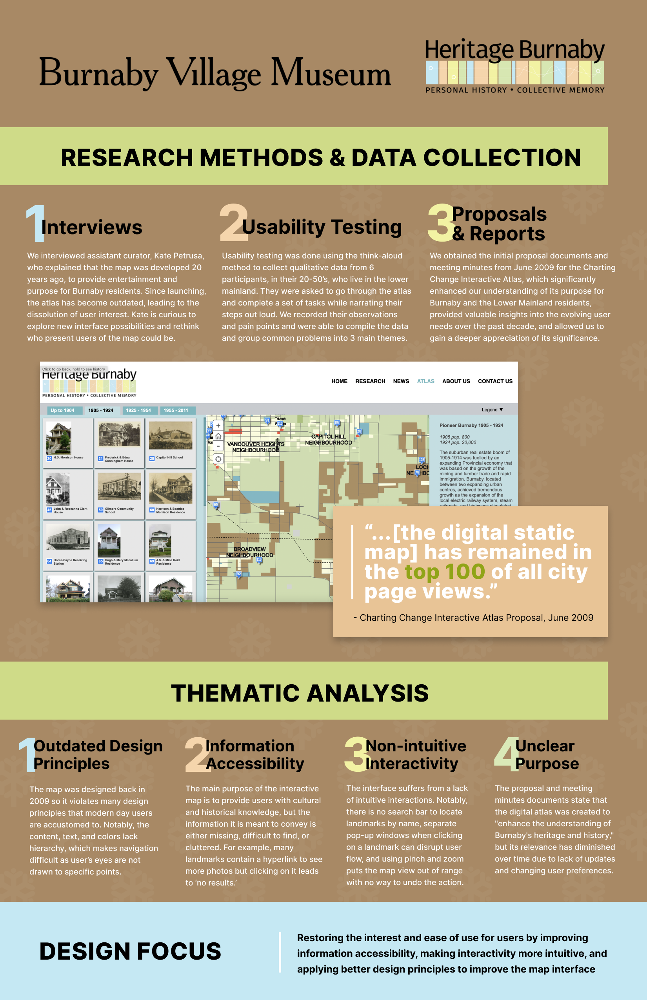
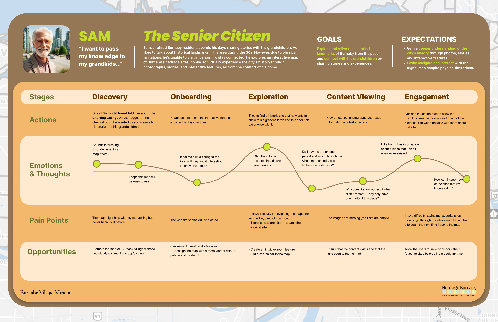
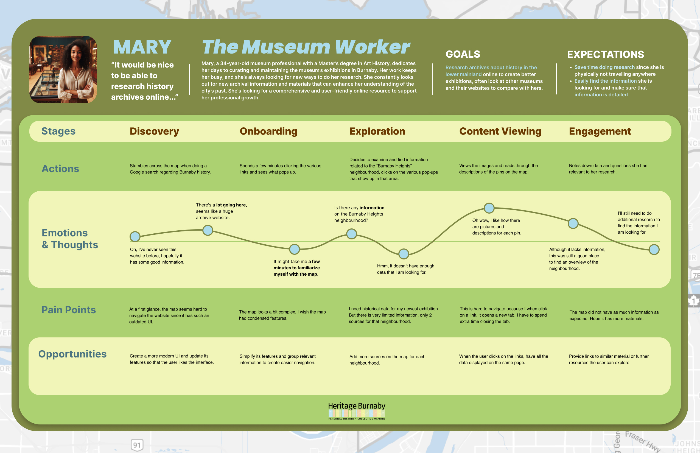
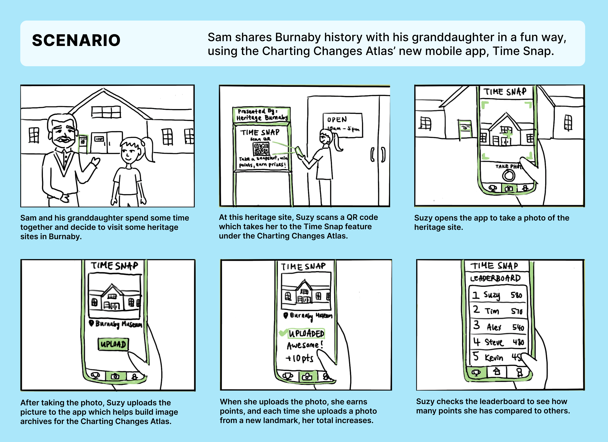
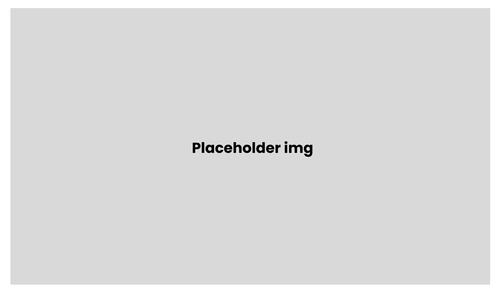

Gamifying Burnaby Village Museum's Charting Changes Atlas
Problem:
Our client, Burnaby Village Museum wants to revive their Charting Changes Atlas, an online interactive map housing Burnaby's historical landmarks.
Solution:
Regenerating interest through a mobile application that gamifies people's interaction with the map, to crowdsource the information needed for the map's revival, and generate public interest.
Project Constraints
Prompt: Work with a client to help them find and solve an interaction design problem.
Time: 12 weeks
Tools used: Figma, Miro
Team: Myself, Jaxine, Kim, Lacie, Keerat and Zhaniya
My Role: Interaction Design, Graphic Design, Communication
Client
Our client for this project is Burnaby Village Museum, who serve as a repository for Burnaby's historical artifacts. We contacted the museum's curator, Kate, and she was interested in reviving one of their interactive maps called Charting Changes Atlas, which had not been updated since 2011. This is what the current interface of the map looks like:
After talking with Kate, we learned that Burnaby Village Museum's goal was to find ways to improve the map and regenerate public interest in the map.
User Research
In finding a design solution to meet our client and their user's needs, we started by conducting ethnographic research. We interviewed Kate as well as with potential users of the Charting Changes Atlas, including local Burnaby residents, field professionals, and history fanatics. We presented our findings to our client through this ethnographic data poster which I designed.
Personas
To better understand the goals and pain points of potential users, we crafted 3 user personas based on our user interviews and I was responsible for the graphic design.

Journey Maps
Now that we had our user personas, we explored the journey of their interaction with the Charting Changes Atlas, which helped us identify interaction design opportunities.
 Brainstorming
Upon getting feedback, we realized that our design opportunities from the journey maps were shallow as they only focused on redesigning the map's poor interface. After reviewing our client and users' goals, we needed to think of a way to fill in all the missing information on the map and get involvement from people in and around Burnaby. Our team rapidly brainstormed design solutions on sticky notes in 15 minutes, and categorized them into these 3 main themes.

Design Iterations
We explored 3 design ideas based on our brainstorming session, gamifiying the map, promotion of the map through marketing, and UI improvement suggestions. I fleshed out the gamification idea into a storyboard and the goal of this design solution was to create a mobile application where people can interact with the map in a more entertaining way.
Participatory Workshop
We wanted to validate our design ideas and collaboratively brainstorm with our potential users, so we hosted a participatory workshop through Miro and Zoom. We held three activities:


From grouping the positive and negative comments from activity 1 & 2, we used affinity mapping to identify major themes in people's perceptions of the map and the results validated our initial research. The positive comments were crucial in helping us identify which parts of the map we should further develop to capture people's interest.

For activity 3, participants ranked our 3 proposed design solutions, revealing that participants were in favor of gamifying the map. Participants also gave really helpful ideas about how to crowdsource the huge gap of missing information from the map.

Design Prototype
***In progress until semester is over.***
Design Prototype for the gamification idea.
Reflection
This was my first time working with a real-life client on a design project, so I was able to experience collaborating with real stakeholders. One thing I learned from this project is that the design iteration process is not linear, and our design solution ended up being completely different from what we had initially planned.